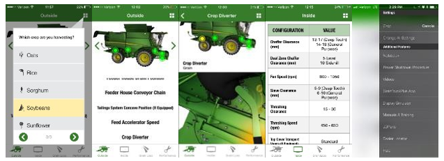

Outils et liens
- Application GoHarvest : informations sur les réglages, calculateur de pertes, JDParts, vidéos, procédures.
- Lien GoHarvest YouTube : vidéos détaillées sur mise hors tension, CombineAdvisor, Active Terrain Adjustment, et autres procédures.
